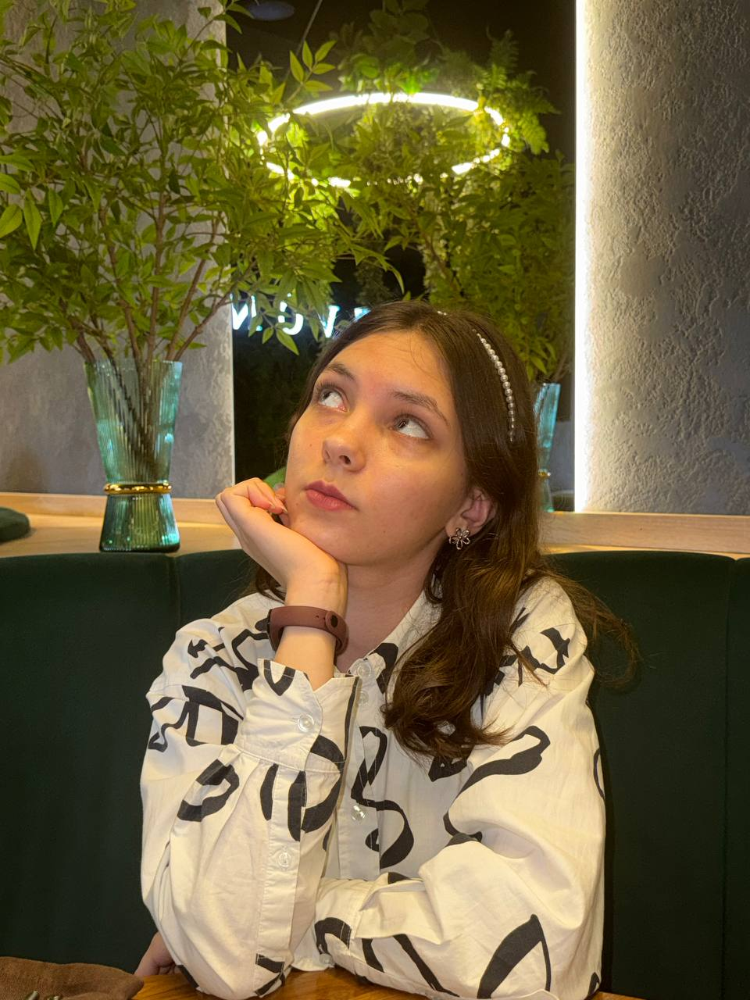

Место учебы
Фундаментальная и прикладная лингвистика, НИУ ВШЭ, Москва
Студентка первого курса"Фундаментальной и компьютерной лингвистики"

Фундаментальная и прикладная лингвистика, НИУ ВШЭ, Москва
Саранск, Республика Мордовия
1-9 класс: просто МОУ СОШ №24, учила углублённо английский
10-11 класс: Лицей МГУ им. Н. П. Огарёва, математическо-информатический класс (да-да...)
Я 4 года выбирала техническую профессию, а в итоге после одного просмотренного фильма, я поняла, что мое место здесь))
Но помимо просмотра фильмов у меня ещё оооооооооооооочень много хобби
- Например, я обожаю рисовать, особенно портреты в графике
- Я увлекаюсь фото- и видеосъемкой, фотошопом и монтажом и могу воплотить любую (даже самую неожиданную!!) идею в жизнь
- Умею очень делать очень много handmade вещей: от украшений до объемных бумажных фигурок
- Люблю путешествовать и знакомиться с новыми людьми, а потом сохранять воспоминания от поездки в коллаже из этикеток, кроссвордов, билетов...
- Мне нравится слушать музыку (кажется, почти любую)
- Я посвятила 7 лет жизни танцам, и очень хочу продолжать это дело!
- А ещё я веду соцсети)
И я обожаю кошек